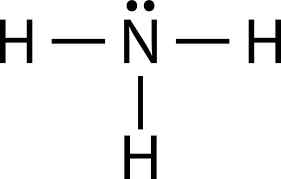

해설 6
단계 1 예시답안
(1) N > O > F. 같은 주기에서는 원자 번호가 증가할수록 유효 핵전하가 증가하기 때문에 원자 반지름이 작아진다.
(2) 양이온이 형성될 때 전자가 떨어져 나가면서 전자껍질의 수가 감소하여 반지름이 작아진다. 음이온이 형성될 때 핵전하는 같지만 전자 수가 증가했기 때문에 전자 사이의 반발에 의해 반지름이 커진다.
단계 2 예시답안
(1) 암모니아의 루이스 구조식은 치환기 3개와 비공유 전자쌍이 있어서 삼각뿔형 구조를 갖는다.

(2) \(\text{CH}_4\)는 대칭구조를 갖는 무극성 분자인 반면, \(\text{NH}_3\)는 극성 분자이기 때문에 분자 사이에 쌍극자-쌍극자 힘이 작용한다. 게다가 \(\text{NH}_3\)는 수소결합을 하기 때문에 분자간 인력이 커서 끓는점이 더욱 높다.
(3) \(\text{NH}_3\)가 1몰 생성되는 반응은 다음과 같다.
\[1.5\text{H}_2(g) + 0.5\text{N}_2(g) \to \text{NH}_3(g)\]
\[\Delta H = 1.5 \times 435 + 0.5 \times 945 - 3 \times 390 = -45 \text{ kJ/mol}\]
단계 3 예시답안
\(\text{Zn}^{2+}(aq) + 2e^- \to \text{Zn}(s)\)
\(\text{Fe}^{2+}(aq) + 2e^- \to \text{Fe}(s)\)
아연(Zn)의 표준환원전위가 철(Fe)의 표준환원전위보다 낮으므로 아연이 철보다 쉽게 산화 된다. 철보다 산화되기 쉬운 금속을 부착하면 철보다 먼저 산화되어 철의 부식이 방지된다. 이 때 철에 부착된 금속이 산화되면서 내놓은 전자가 철로 이동하여 철의 산화되는 것을 방지한다.